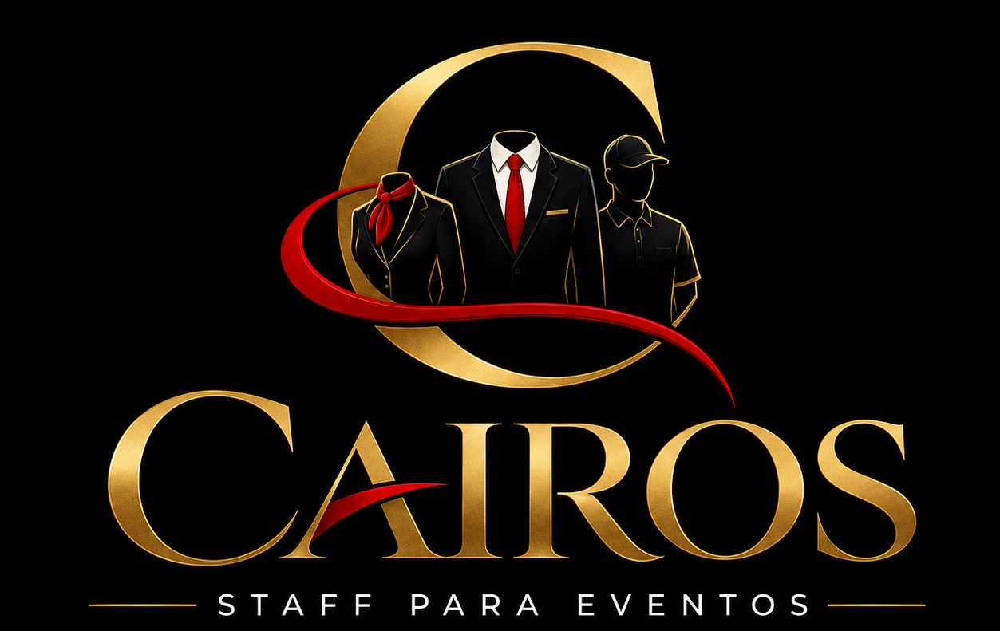

Controle de Acesso
Profissionais responsáveis pelo controle e organização do acesso dos participantes ao evento.

Equipes profissionais para eventos corporativos, sociais, comerciais, feiras, exposições e muito mais.
Solicite um orçamentoA Cairos Staff é especializada no fornecimento de profissionais para eventos, oferecendo equipes preparadas para atender diferentes necessidades com organização, responsabilidade e profissionalismo.
Trabalhamos para proporcionar tranquilidade aos nossos clientes, cuidando da formação e organização das equipes para cada evento.
Profissionais responsáveis pelo controle e organização do acesso dos participantes ao evento.
Profissionais preparados para auxiliar na segurança, organização e controle do ambiente.
Recepcionistas preparados para acolher convidados, orientar participantes e auxiliar no credenciamento.
Equipes de limpeza para manter os ambientes organizados durante e após o evento.
Profissionais para auxiliar nos serviços de copa e suporte durante o evento.
Profissionais para auxiliar na movimentação, organização e transporte de materiais.